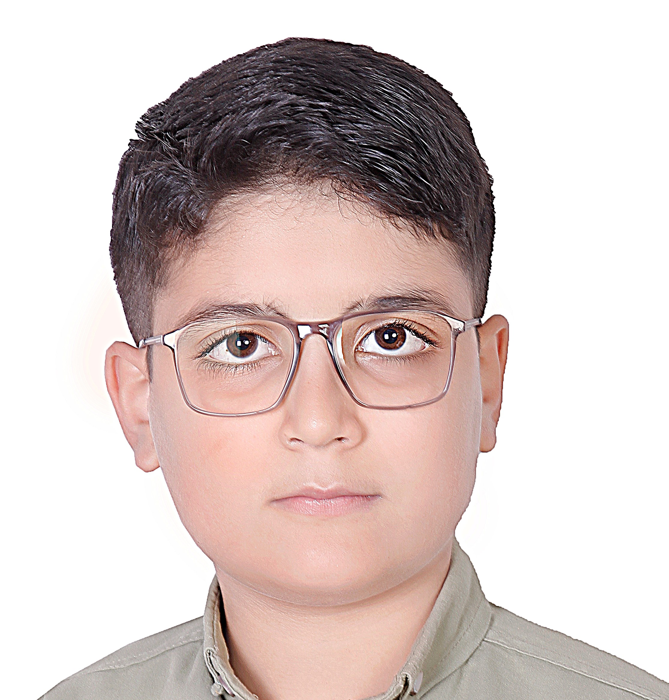

☀ خورشید
خورشید حدود ۹۹٫۸٪ جرم کل منظومهی شمسی را دارد. نور آن حدود ۸ دقیقه و ۲۰ ثانیه طول میکشد تا به ما برسد؛ یعنی هر لحظه خورشید را آنطور میبینیم که ۸ دقیقه پیش بوده است.
خورشید حدود ۹۹٫۸٪ جرم کل منظومهی شمسی را دارد. نور آن حدود ۸ دقیقه و ۲۰ ثانیه طول میکشد تا به ما برسد؛ یعنی هر لحظه خورشید را آنطور میبینیم که ۸ دقیقه پیش بوده است.
ماه هر سال حدود ۳٫۸ سانتیمتر از زمین دور میشود. چون چرخش آن به دور خودش با گردشش به دور زمین همزمان است، همیشه یک روی آن را میبینیم.
در حجم مشتری بیش از ۱۳۰۰ زمین جا میشود. «لکهی سرخ بزرگ» آن طوفانی است که دستکم صدها سال است در جو سیاره میچرخد.
ستارهها درون ابرهای سرد گاز و غبار، یعنی سحابیها، متولد میشوند. وقتی بخشی از ابر زیر گرانش فرومیریزد، هستهاش آنقدر داغ میشود که همجوشی هستهای آغاز شود و ستاره روشن گردد.
در جهان قابل مشاهده دستکم صدها میلیارد کهکشان وجود دارد و هر کدام میلیاردها ستاره دارند. نور حتی از یک سوی کهکشان ما تا سوی دیگرش حدود ۱۰۰ هزار سال راه میپیماید.
چشم ما حدود ۲۰ تا ۳۰ دقیقه طول میکشد تا با تاریکی سازگار شود. شبهای بیماه، دوری از چراغهای شهر و استفاده از چراغقوهی قرمز بهترین کمک برای دیدن آسمان است.
نوا انجمنی دانشآموزی است برای کسانی که شبها سرشان را بالا میگیرند و میپرسند آن بالا چه خبر است. نام ما از «نوا» میآید؛ ستارهای که ناگهان روشن میشود و آسمان را غافلگیر میکند.
ما باور داریم نجوم فقط فرمول و کتاب نیست؛ یک تجربه است. تجربهی دیدن حلقههای زحل از پشت تلسکوپ، یا فهمیدن اینکه نوری که امشب به چشممان میرسد، سالها پیش راه افتاده است. نوا جایی است که این کنجکاوی کنار هم جمع میشود، پرسشها بیجواب نمیمانند و هر عضو میتواند چیزی بیاموزد و چیزی یاد بدهد.
«آسمان مدرسهای است که هیچوقت تعطیل نمیشود.»



✦ نوا، جایی برای رویاهای ستارهای...